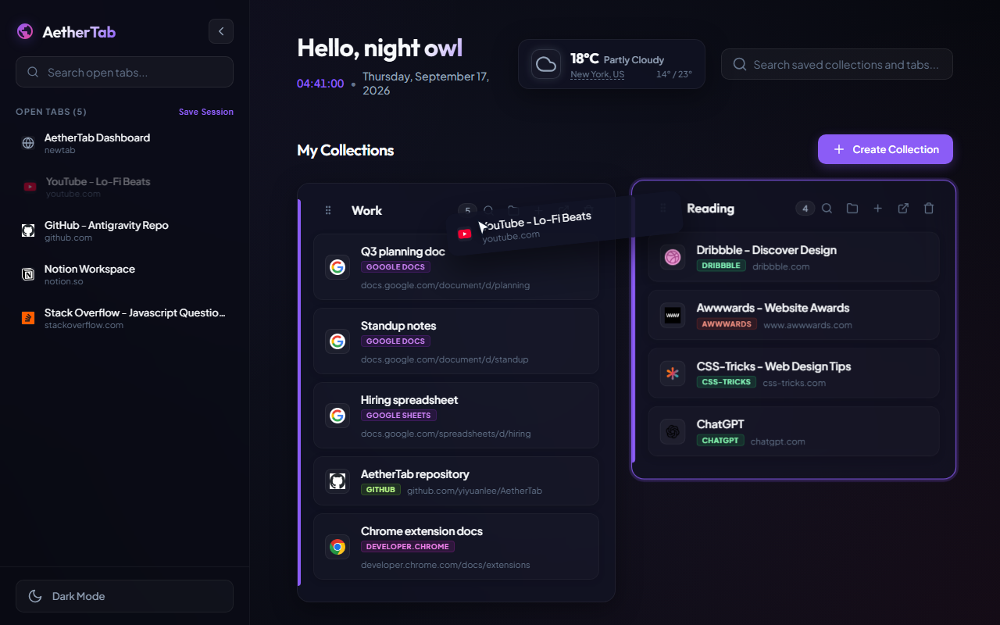
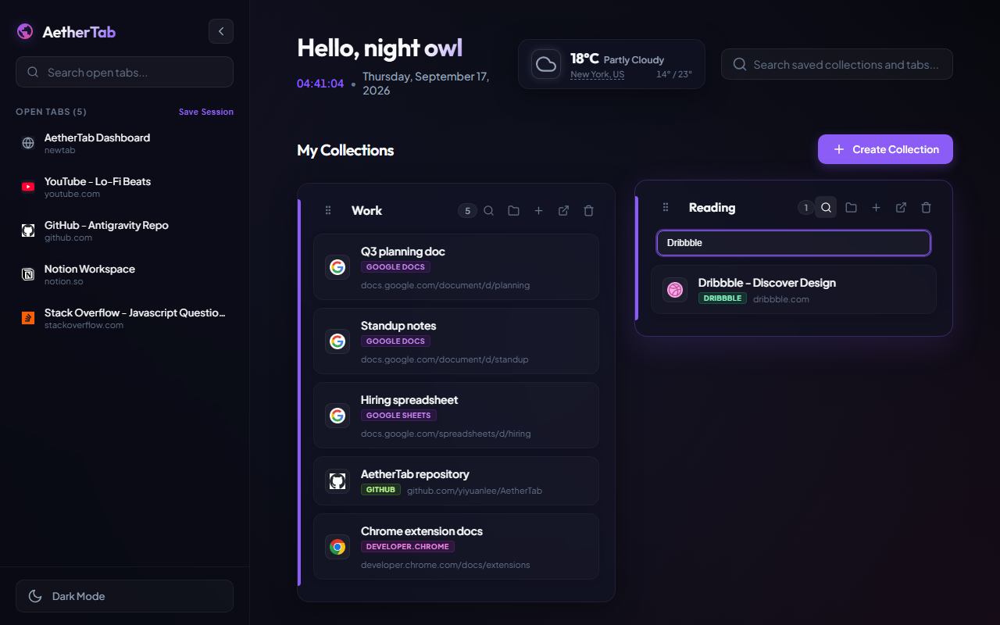

How to
Save Chrome tabs into collections
AetherTab takes over the new tab page. Open tabs stay in the left sidebar. Collections sit in the main canvas. Saving a tab is a drag, not a separate window.
Drag one tab
- Open a new tab so the dashboard is in front of you.
- Find the page in Open Tabs.
- Drag it onto a collection card. AetherTab writes the title and URL into that collection, then closes the browser tab.

Drop on the card, not on the tab strip. The live tab should disappear from the sidebar after a successful save.
Save the whole window
Use Save Session in the sidebar when you want every open tab in a dated collection at once. That is the faster path after a research binge. You can still split pages into other collections later by dragging saved links between cards.
Find a page again
Click a saved row to reopen it. If one collection is dense, open the card search and type part of the title or URL. Group by site folds same-domain pages (several Google Docs, several GitHub tabs) into folders on that card.

The extension is free on the Chrome Web Store. Collections stay in Chrome storage on this browser.
Add to Chrome